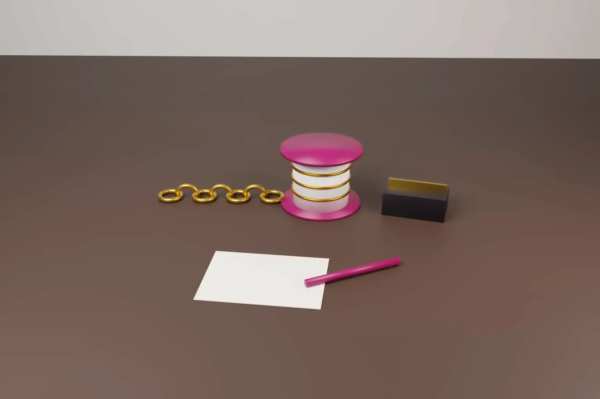

Can an Indian patent be revoked because each of its features was already known, or because the patentee has not yet made the product? Not on those grounds alone. On 13 November 2026 the Madras High Court dismissed a revocation petition against a baler patent. It held that the claimed combination was new. It also held that non working is not a ground for revocation under Section 64 of the Patents Act, 1970.
The case is M/s. Bull Agro Implements v Ashlyn Antony and the Deputy Controller of Patents and Designs, OP (PT) No. 4 of 2024. Justice P.B. Balaji decided it. The patent was IN 458805, granted on 12 October 2023 for a baler that ties round bales with twine.
- The court compared 12 prior art documents with the claimed combination and found that none disclosed all its features together.
- A combination of features that are each publicly known can still be patentable if the particular combination is new and inventive.
- Non working or non-marketing of a patented invention is not a ground for revocation under Section 64.
- Grounds of insufficiency and unclear claims failed because the petitioners' own pleadings showed they understood the invention.
- The petition was dismissed with no order as to costs.
The facts
The patentee's baler used three features together. They are a chain drive on a link plate and a side backstop clutch that holds the twine for the next cycle. The third is a blade beneath the clutch that cuts the twine at a set bale density. The petitioners, a farm implements business, filed for revocation after receiving a cease and desist notice.
They relied on Section 64(1)(d), (f), (h) and (i). They also argued that the claimed features were anticipated by prior art. Those grounds cover subject matter that is not an invention, obviousness, insufficient description and unclear claims. They also argued that the patentee had not commercialised the baler.
What the court decided
The claimed invention is the combination. The court set out the patentee's case that the invention is the combination of the chain drive, the clutch and the blade (paragraph 22). It then compared each of the 12 cited documents with that combination (paragraphs 25 to 30). They were ten US patents, one US publication and one European patent.
Known parts, new combination. No document disclosed the full combination. The court accepted that the features may be "a combination of some features already existing in the field and known publicly". It held that the particular combination was new and industrially applicable (paragraph 31). On obviousness, it found "there is no literature available to a skilled person to arrive at this combination" (paragraph 24). It also relied on the Controller's reasoned grant (paragraph 32).
Disclosure and clarity. The grounds under Section 64(1)(h) and (i) failed. Every feature of claims 1 to 7 was disclosed. There was no evidence that a skilled person had tried and failed to make the baler (paragraph 33).
Non working is not a revocation ground. The court referred to Section 146(2) and Rule 131, as amended in 2024. Under them, a patentee files a statement of working in Form 27 once for every period of three financial years. It held that "under Section 64, non-working or non-marketing of the patent is not even a ground for revocation" (paragraphs 16 and 34).
The court also noted that the petition came only after the cease and desist notice, although that was not decisive (paragraph 23).
What the court did not decide
- It did not decide infringement. The ruling concerns validity only.
- It did not discuss Section 3(f), which excludes a mere arrangement of known devices each working independently in a known way. The court did not analyse whether the three features interact. Its finding rests on the combination being new.
- It did not cite case law on combination patents or obviousness. The analysis rests on the claims, the prior art and the Act.
- It did not rule on compulsory licensing. Non working has its own remedy under Sections 84 and 85.
Where non working does matter in India
Non working is not irrelevant. Under Section 84, any person may seek a compulsory licence three years after grant. One ground is that the invention is not worked in India. Under Section 85, the Controller may revoke a patent for non working, but only on an application made two years after the first compulsory licence. This mirrors Article 5A of the Paris Convention, which allows forfeiture only where a compulsory licence has not been enough.
Form 27 matters too. Failure to file a statement of working can attract a penalty under Section 122. Patentees should keep accurate records of commercial use in India for each three year period.
How the US, Europe and the UK compare
United States. Under 35 U.S.C. § 103, the question is whether the claimed invention as a whole would have been obvious. The Supreme Court addressed combinations in KSR v Teleflex (2007). It said a patent "is not proved obvious merely by demonstrating that each of its elements was, independently, known in the prior art." It also asked whether there was a reason to combine them. The US has no working requirement and no revocation for non use.
Europe. The EPO applies the problem and solution approach under Article 56 EPC. Its Guidelines (Part G, Chapter VII, section 7) distinguish a true combination from a mere juxtaposition. In a true combination the features interact to produce a technical effect. The EPC has no working requirement. Compulsory licences are a matter for national law.
United Kingdom. UK courts assess obviousness using the structured approach in Pozzoli v BDMO [2007] EWCA Civ 588. Compulsory licences are available under section 48 of the Patents Act 1977 after three years. Non working alone is a ground only against non WTO proprietors. It is not a ground for revocation.
The common thread is that the claim is judged as a whole. India's approach in Bull Agro fits that pattern, subject to the separate statutory test in Section 3(f).
Practical steps
- Patentees drafting combination claims should explain in the specification how the features interact and what effect the combination produces. That answers both obviousness and Section 3(f).
- Patentees should file Form 27 on time for each three year period, even where the product is not yet on the market.
- Challengers should look for a single document or an obvious combination that discloses the whole claim. Showing that each part was known is not enough.
- Challengers who want to rely on non working should consider a compulsory licence under Section 84, not revocation under Section 64.
- Both sides should file revocation petitions with expert evidence. The court noted the absence of any evidence that a skilled person failed to make the invention.
We prepare and defend Indian patents in prosecution, opposition and revocation. See our patent services and our note on inventive step and mosaicing in India.
Frequently asked questions
Can a patent be granted for a combination of known features in India?
Yes, if the particular combination is new and inventive. In Bull Agro v Antony, the Madras High Court upheld a baler patent whose combination was new. Section 3(f) still excludes a mere arrangement of known devices working independently.
Can a patent be revoked in India for not being worked?
Not under Section 64. Non working can found a compulsory licence under Section 84, and revocation under Section 85 only after a compulsory licence has been granted.
How often is Form 27 filed in India?
Since the 2024 amendment to Rule 131, a statement of working is filed once for every period of three financial years after grant. It is due within six months after each period ends.